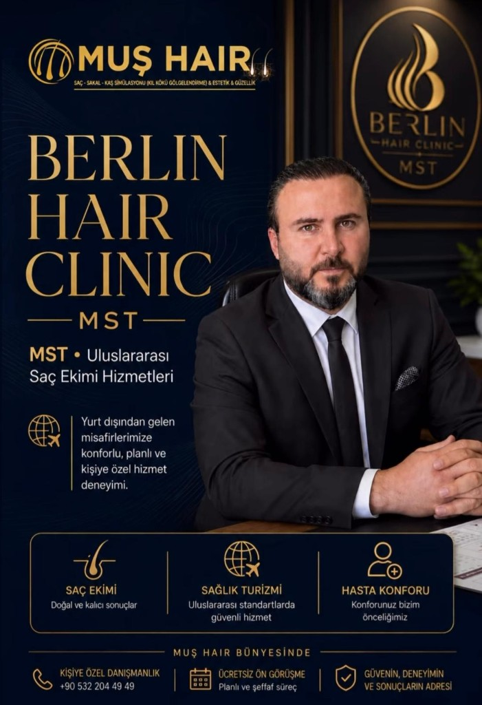
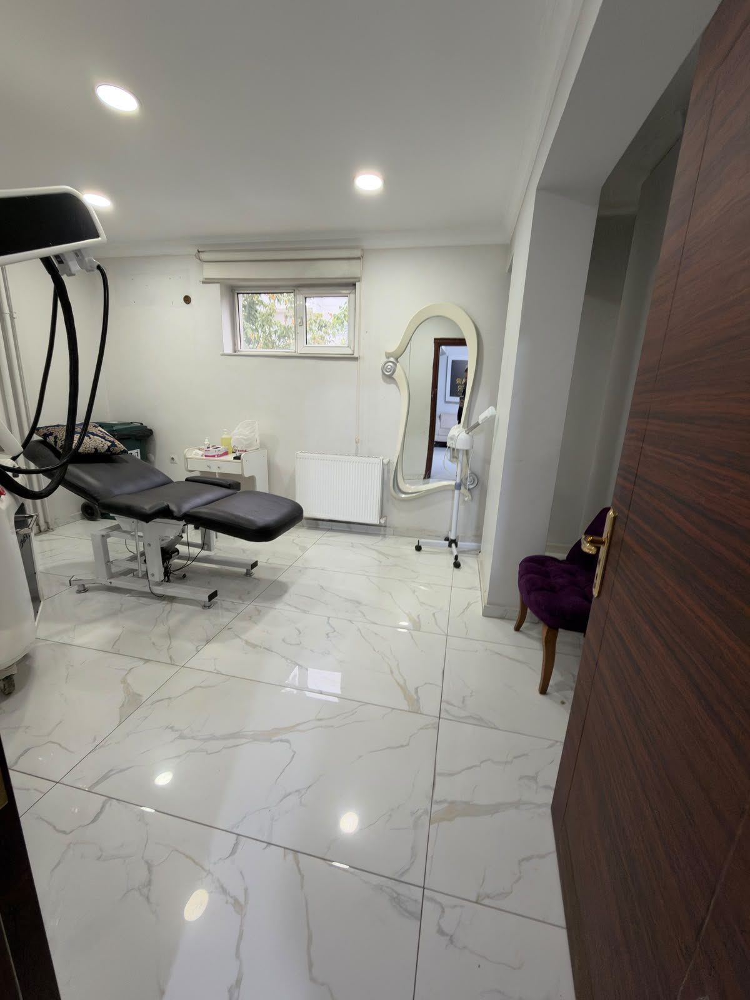
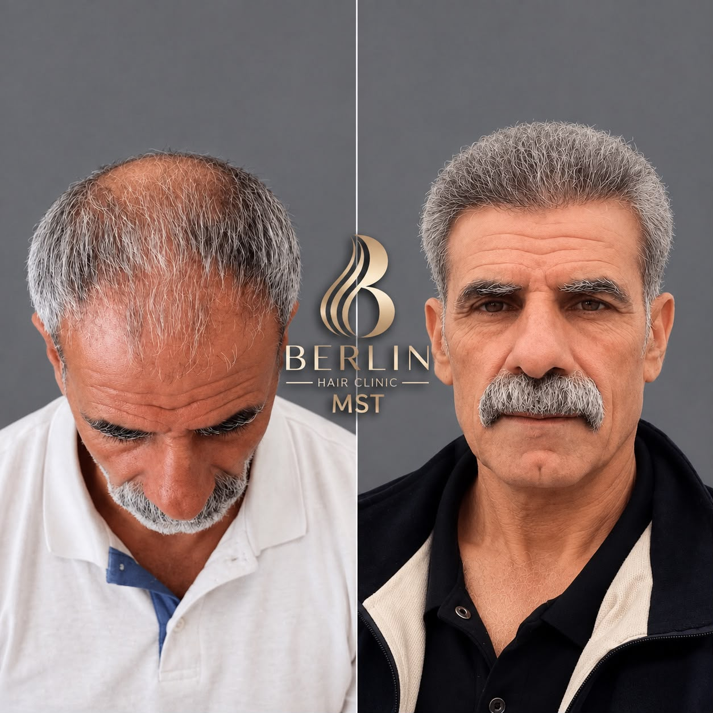
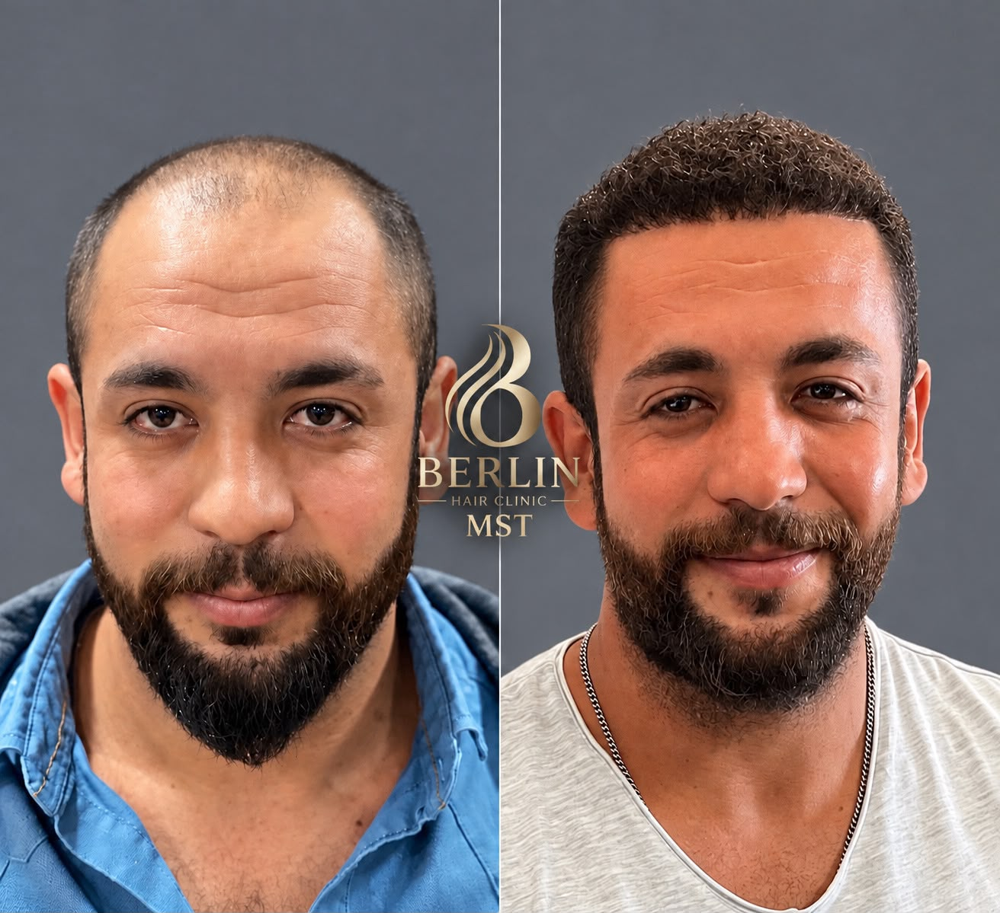
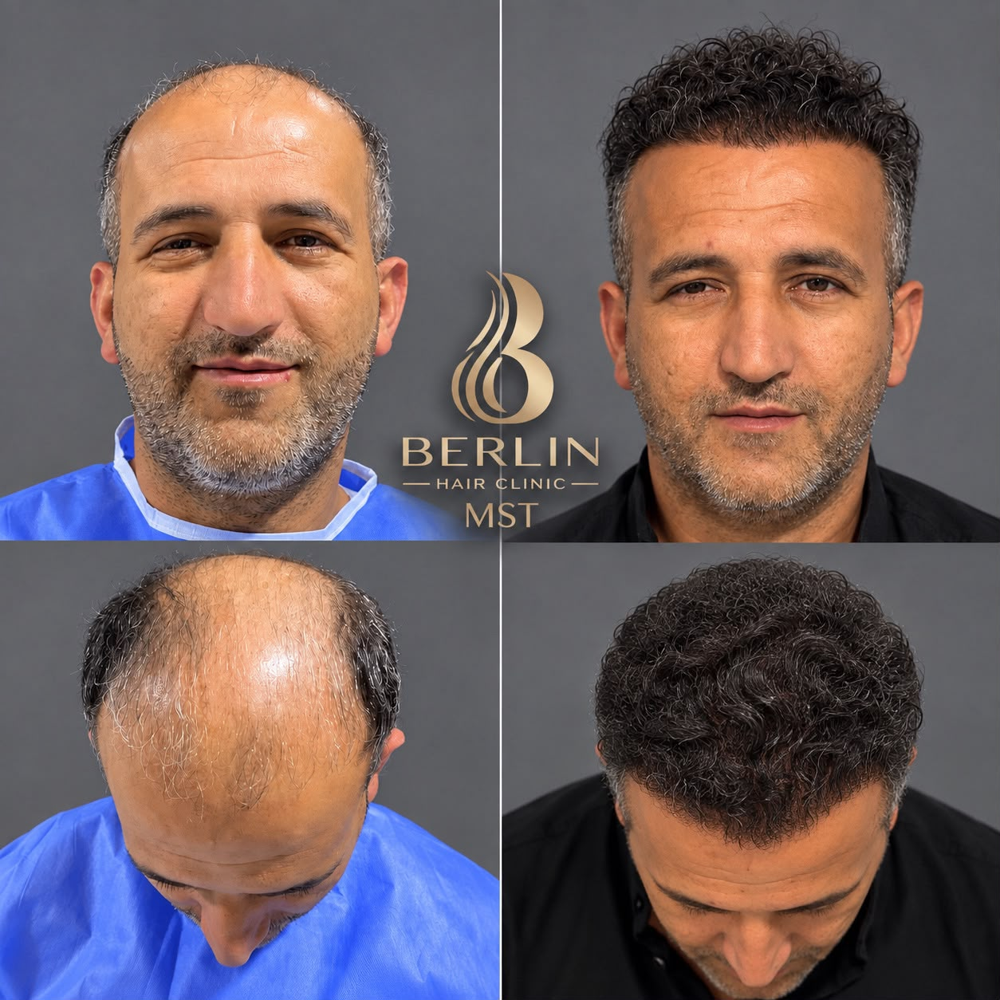
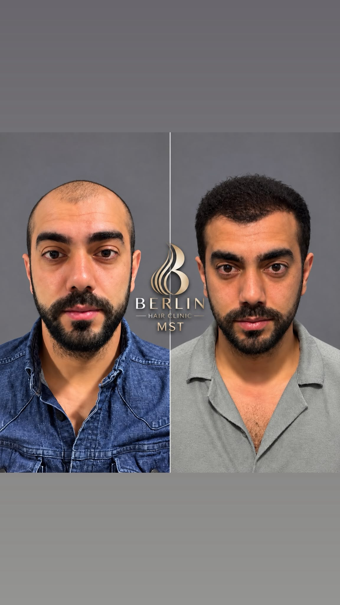

FUE Saç Ekimi
Tek tek greft alımı ile doğal yoğunluk. Donör bölgeyi koruyan, iz bırakmayan modern teknik.
Doğal ve kalıcı sonuçlarMuş Hair bünyesinde · Uluslararası saç ekimi
Saç, sakal, kaş simülasyonu ve estetikte doğal çizgi. Yurt dışından gelen misafirlerimize konforlu, planlı ve kişiye özel hizmet deneyimi.


Neden Berlin Hair Clinic MST?
Saç ekimi bir “işlem” değil; yüz oranlarınıza, donör bölgenize ve yaşam tarzınıza göre kurgulanan bir yolculuktur. MST ekibi, greft dağılımını, saç çizgisini ve yoğunluğu doğal duracak şekilde planlar.
Muş Hair bünyesinde yürüttüğümüz uluslararası hasta programı; transfer, konaklama, tercüme ve ameliyat sonrası takibi tek bir danışmanlık hattında toplar.
Hizmetler
İhtiyacınıza göre cerrahi ekim veya kıl kökü gölgelendirme. Her plan, yüz hatlarınızla uyumlu olacak şekilde tasarlanır.
Tek tek greft alımı ile doğal yoğunluk. Donör bölgeyi koruyan, iz bırakmayan modern teknik.
Doğal ve kalıcı sonuçlarChoi implanter ile kanal açmadan yerleştirme. Daha sık ekim ve daha kısa iyileşme süresi.
Yoğun görünümSeyrek sakal, yara izi veya asimetri için yüz hatlarınıza uygun sakal tasarımı.
Yüzünüzle uyumlu çizgiSeyrek veya şekilsiz kaşlarda kıl yönüne uygun ekim. Kadın ve erkek hastalar için.
İnce işçilikKıl kökü gölgelendirme (SMP) ile seyrek alanlarda anında dolgunluk illüzyonu.
Cerrahisiz alternatifEkim öncesi ve sonrası saç kalitesini destekleyen PRP, mezoterapi ve bakım protokolleri.
Uzun vadeli güçlendirmeSağlık turizmi
Berlin, Avrupa ve Körfez ülkelerinden gelen hastalarımız havalimanı karşılama, otel, klinik transferi ve tercümanla karşılanır. Süreç planlıdır; sürpriz yoktur.
VIP transfer, dil desteği ve ilk gün ön muayene randevusu.
Kliniğe yakın, dinlenmeye uygun otel seçenekleri ve refakatçi düzeni.
Yıkama eğitimi, ilaç seti, 10. gün kontrolü ve uzaktan takip.


Planlı ve şeffaf süreç
Fotoğraf veya online görüşme ile saç tipi, donör ve beklenti analizi.
Greft sayısı, teknik, saç çizgisi tasarımı ve net maliyet.
Tarih, transfer ve konaklama tek danışmanda toplanır.
Lokal anestezi, greft alımı ve doğal açıya uygun ekim.
İlk yıkama, kabuk dökümü ve şok dökülme dönemi rehberi.
3, 6 ve 12. ay kontrolleri ile kalıcı görünüm.
Doğal görünüm
Başarılı bir ekim, “ekilmiş gibi durmayan” bir saç çizgisidir. Aşağıdaki görseller klinik atmosferi ve hedeflediğimiz doğal duruşu yansıtır.




Konforunuz bizim önceliğimiz. Sessiz dinlenme alanı, refakatçi düzeni ve operasyon günü adım adım eşlik.
Sterilizasyon, tek kullanımlık malzemeler ve kayıtlı hasta dosyası ile güvenli hizmet.
Greft sayısı, teknik ve fiyat önceden netleşir. Operasyon günü sürpriz paket yoktur.
Hasta deneyimi
“Berlin’den geldim. Havalimanından otel ve kliniğe kadar her şey yazılı plandaydı. Saç çizgisi doğal duruyor; kimse fark etmiyor.”
“Sakal ekimi düşündüm, önce ücretsiz görüşmede gerçekçi greft sayısı söylediler. Abartı yok, süreç şeffaftı.”
“Kaş simülasyonu yaptırdım. Makyajsız da duruyor. Danışmanım her aşamada fotoğrafla takip etti.”
Sık sorulanlar
Donör bölgeden alınan greftler genetik olarak dökülmeye dirençlidir. Doğru planlama ve bakımla sonuç kalıcıdır; 12. ayda nihai görünüm oturur.
FUE’de kanallar açılıp greftler yerleştirilir. DHI’de implanter kalemiyle doğrudan ekim yapılır; sık ekim ve daha kontrollü açı sağlar. Size uygun tekniği muayenede belirleriz.
İşlem lokal anestezi altındadır. Çoğu hasta aynı gün oteline döner. Operasyon süresi greft sayısına göre 6–8 saat civarındadır.
Genellikle 3 gece / 4 gün yeterlidir: muayene, operasyon, ilk yıkama ve kontrol. Uzun mesafe uçuşlar için planı danışmanınızla netleştiririz.
Evet. İlk haftalarda ekilen saçlar geçici dökülebilir. Yeni çıkış 3. aydan itibaren başlar, 6–12. ayda yoğunlaşır.
Kişiye özel planlama
Fotoğraflarınızı gönderin, size özel greft tahmini ve seyahat planı çıkaralım. Muş Hair bünyesinde, Berlin Hair Clinic MST ekibi sizi arar.